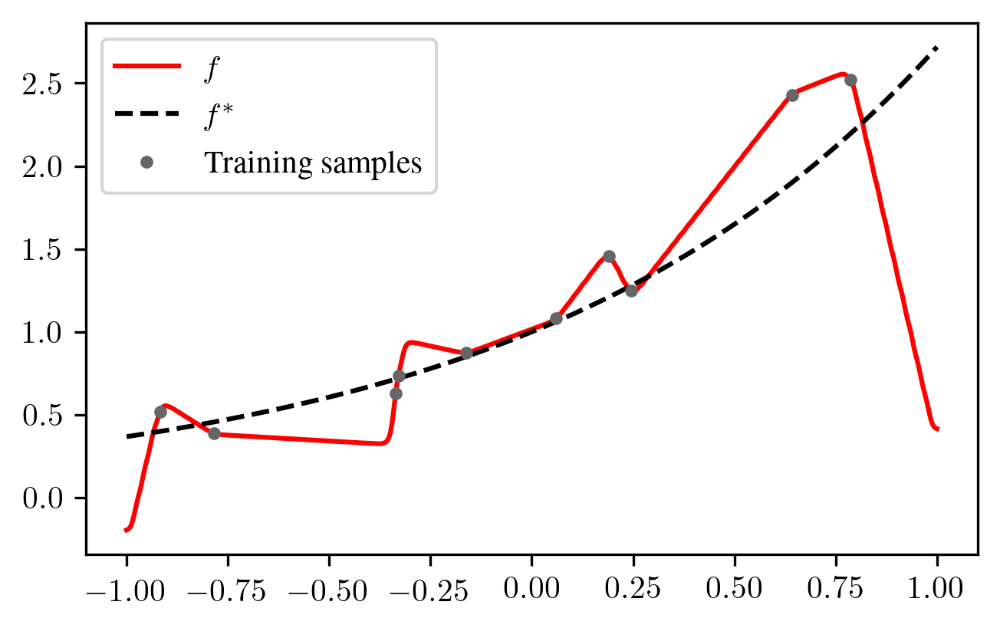

I have just uploaded a new paper (https://arxiv.org/abs/2010.01851) in which I prove that a certain class of linear regression methods always performs badly on noisy data when the number of model parameters is close to the number of data points. This blog post is not a summary of the paper. Instead, I want to provide some intuition with simple examples and show some aspects of the proof strategy in a simplified setting. After this simplified analysis, I will show a proof that I find quite amusing, in particular because it involves computing the expected determinant of certain random matrices using combinatorics. Unfortunately, this proof did not make it to the paper since it gives a slightly worse result than the proof that made it to the paper.
Interpolating Methods and Double Descent
Suppose that we have a regression problem of the following (typical) form: Given \(n \geq 1\) samples \((\boldsymbol{x}_1, y_1), \ldots, (\boldsymbol{x}_n, y_n)\) with \(\boldsymbol{x}_i \in \mathbb{R}^d\) and \(y_i \in \mathbb{R}\), find a function \(f: \mathbb{R}^d \to \mathbb{R}\) that “fits the data well”. For simplicity, we will consider the model where \(\boldsymbol{x}_1, \ldots, \boldsymbol{x}_n\) are drawn independently from an unknown distribution \(P_X\) and \(y_i = f^*(\boldsymbol{x}_i) + \varepsilon_i\), where \(f^*: \mathbb{R}^d \to \mathbb{R}\) is the unknown target function and \(\varepsilon_i\) are independent standard normal noise variables. We define the error made by our learned function as
\[\mathcal{E}(f) :=\mathbb{E}_{\boldsymbol{x}\sim P_X} (f(\boldsymbol{x}) - f^*(\boldsymbol{x}))^2~.\]
Although we cannot exactly compute \(\mathcal{E}(f)\) since \(P_X\) and \(f^*\) are unknown, we want \(\mathcal{E}(f)\) to be low such that we make good predictions on test samples \(\boldsymbol{x}\) that are drawn from the same distribution \(P_X\) as the training samples \(\boldsymbol{x}_1, \ldots, \boldsymbol{x}_n\). Since our labels \(y_i\) are noisy due to the corruption by \(\varepsilon_i\), conventional wisdom tells us that if \(f\) interpolates the samples, it would be overfitting and therefore a bad estimate. However, interpolating the data can still give small \(\mathcal{E}(f)\), even with label noise:

Although putting small spikes around the data points may look silly in this example with \(d=1\), it would look much more natural in high dimensions \(d\) where the samples \(\boldsymbol{x}_i\) can all have large distance from each other and the spikes can be much wider without affecting \(\mathcal{E}(f)\) much. Indeed, modern neural networks can often achieve good generalization performance despite being so large that they can interpolate the data.
Research around the “Double Descent” phenomenon has found that in various settings with few to no regularization, ML methods whose number of parameters \(p\) is close to the number of samples \(n\) perform rather badly. For example, common linear models with \(p=n\) are barely able to interpolate the data, but there is only one interpolating solution, and this solution can be quite wiggly:
In the underparameterized case (\(p \ll n\)), the linear model is not able to interpolate the data and the noise partially cancels out:
In the overparameterized case (\(p \gg n\)), there are multiple interpolating solutions. The linear model chooses the one with the smallest parameter norm, and this choice may provide less overshoots than in the case \(p = n\):

In the paper, I show that a large class of linear models performs badly for \(p \approx n\) when the labels \(y_i\) are noisy. The considered linear models are defined in the next section.
Linear Regression with Features and a Lower Bound
We consider unregularized linear regression with features, where we choose a fixed feature map \(\phi: \mathbb{R}^d \to \mathbb{R}^p\) for some number of parameters \(p\) and then learn the parameters \(\boldsymbol{\beta}\in \mathbb{R}^p\) for the function \(f(\boldsymbol{x}) = \boldsymbol{\beta}^\top \phi(\boldsymbol{x})\). The parameters \(\boldsymbol{\beta}\) are chosen to minimize the training error
\[\frac{1}{n} \sum_{i=1}^n (f(\boldsymbol{x}_i) - y_i)^2~.\]
In case that there are multiple optimal parameters \(\boldsymbol{\beta}\), the one with minimum Euclidean norm is chosen. This procedure can be expressed as an equation: \(\boldsymbol{\beta}= \boldsymbol{Z}^+ \boldsymbol{y}\), where \(\boldsymbol{Z}^+\) is the Moore-Penrose pseudoinverse of
\[\boldsymbol{Z}= \begin{pmatrix} \phi(\boldsymbol{x}_1)^\top \\ \vdots \\ \phi(\boldsymbol{x}_n)^\top \end{pmatrix}~.\]
The function \(f\) found in this way is random, since it depends on the random draw of the training data. We can therefore define the expected error over all random draws of training data sets:
\[\mathcal{E}:=\mathbb{E}_f \mathcal{E}(f)~.\]
Suppose that the linear model can interpolate \(p\) randomly drawn data samples with probability one and that some other weak assumptions are satisfied. I show in the paper that many feature maps \(\phi\) and input distributions \(P_X\) satisfy these assumptions. In my paper, I prove that under these assumptions, the following holds:
If \(p \geq n\), then \(\mathcal{E}\geq \frac{n}{p+1-n}\).
If \(p < n\), then \(\mathcal{E}\geq \frac{p}{n+1-p}\).
If the noise \(\varepsilon_i\) has a variance other than \(1\), the lower bounds are scaled proportionally to the variance.
A very simple case
Here, I want to illustrate some of the main arguments for my lower bound in the simplest case with \(n = p = 1\), i.e. we have one sample \((\boldsymbol{x}_1, y_1)\) with \(\phi(\boldsymbol{x}_i) \in \mathbb{R}\). Of course, nobody would expect to get good results with one sample in regression, so this case is not particularly interesting from a practical perspective, but maybe it is at least possible to pick a “lucky” feature map which gives good estimates for one particular target function \(f^*\)?
It can be shown that for linear models, the zero target function \(f^* \equiv 0\) yields the smallest possible \(\mathcal{E}\) among all possible target functions. Therefore, we will assume \(f^* \equiv 0\) in the following.
The regression function is \(f(\boldsymbol{x}) = \beta \phi(\boldsymbol{x})\). In order to interpolate the single datapoint \((\boldsymbol{x}_1, y_1)\), the parameter \(\beta\) must satisfy \(y_1 = \beta \phi(\boldsymbol{x}_1)\), or \(\beta = \frac{y_1}{\phi(\boldsymbol{x}_1)}\). Of course, this is only possible if \(\phi(\boldsymbol{x}_1)\) is nonzero. We therefore assume that \(\phi(\boldsymbol{x}_1)\) is nonzero almost surely, that is, \(\phi(\boldsymbol{x}_1) \neq 0\) with probability \(1\). For this estimate, the corresponding error is
\[\mathcal{E}(f) = \mathbb{E}_{\boldsymbol{x}\sim P_X} (f(\boldsymbol{x}) - f^*(\boldsymbol{x}))^2 = \mathbb{E}_{\boldsymbol{x}\sim P_X} \beta^2 \phi(\boldsymbol{x})^2 = \frac{y_1^2}{\phi(\boldsymbol{x}_1)^2} \mathbb{E}_{\boldsymbol{x}\sim P_X} \phi(\boldsymbol{x})^2~. \]
Since \(f^* \equiv 0\), \(y_1 = \varepsilon_1\) and \(\varepsilon_1\) is independent of \(\boldsymbol{x}_1\) by assumption. We also assumed that \(\varepsilon_1\) is standard normal, hence \(\mathbb{E}y_1^2 = \mathbb{E}\varepsilon_1^2 = \operatorname{Var}(\varepsilon_1) = 1\). Therefore,
\[\begin{aligned} \mathcal{E}&= \mathbb{E}_f \mathcal{E}(f) = \left(\mathbb{E}y_1^2\right) \cdot \left(\mathbb{E}_{\boldsymbol{x}_1 \sim P_X} \frac{1}{\phi(\boldsymbol{x}_1)^2}\right) \cdot \left(\mathbb{E}_{\boldsymbol{x}\sim P_X} \phi(\boldsymbol{x})^2\right) \\ &= \left(\mathbb{E}_{\boldsymbol{x}_1 \sim P_X} \frac{1}{\phi(\boldsymbol{x}_1)^2}\right) \cdot \left(\mathbb{E}_{\boldsymbol{x}\sim P_X} \phi(\boldsymbol{x})^2\right)~.\end{aligned}\]
A very simple feature map is the constant feature map with \(\phi(\boldsymbol{x}) = 1\) for all \(\boldsymbol{x}\). For this feature map, we immediately obtain
\[\mathcal{E}= 1 \cdot 1 = 1~.\]
For the constant feature map, our interpolating function \(f(x)\) is always constant. In an attempt to decrease \(\mathcal{E}\), one might try to bring the feature map closer to zero away from the data point \(\boldsymbol{x}_1\). For example, choosing the feature map \(\phi(x) = e^{-x^2}\) can reduce \(\mathcal{E}(f)\) if \(x_1 = 0\):
The downside is that in our model, the feature map \(\phi\) is constant and chosen before seeing \(\boldsymbol{x}_1\). Therefore, if \(\boldsymbol{x}_1\) lies somewhere else, the parameter \(\beta\) might need to be much larger, which can drastically increase \(\mathcal{E}(f)\):
As another example, assume that \(P_X\) is the uniform distribution on \([0, 1]\) and our feature map is \(\phi(x) = e^x\). Then,
\[\begin{aligned} \mathbb{E}_{x \sim P_X} \phi(x)^2 &= \int_0^1 e^{2x} \,\mathrm{d}x = \frac{1}{2}(e^2-1) \\ \mathbb{E}_{x_1 \sim P_X} \frac{1}{\phi(x_1)^2} &= \int_0^1 e^{-2x} \,\mathrm{d}x = \frac{1}{2}(1 - e^{-2})\end{aligned} \]
and since \(f^* = 0\), \(y_1 = \varepsilon_1\) is independent of \(x_1\) with \(\mathbb{E}y_1^2 = 1\). Thus,
\[\mathcal{E}= \left(\mathbb{E}_{x_1 \sim P_X} \frac{1}{\phi(x_1)^2}\right) \cdot \left(\mathbb{E}_{\boldsymbol{x}\sim P_X} \phi(\boldsymbol{x})^2\right) = \frac{1}{4} (e^2 - 1)(1 - e^{-2}) \approx 1.38~.\]
We have seen that for the exponential feature map, \(\mathcal{E}\) was larger than for the constant feature map, at least for this particular input distribution \(P_X\). We can use Jensen’s inequality to show that for \(p=n=1\), no feature map \(\phi\) yields a lower \(\mathcal{E}\) than the constant feature map, as long as \(\phi(\boldsymbol{x}_1)\) is nonzero almost surely: Consider the function \(h: (0, \infty) \to (0, \infty), u \mapsto 1/u\). This function is convex because its second derivative \(h^{(2)}(u) = 2u^{-3}\) is positive for all \(u \in (0, \infty)\). But for convex functions \(h\), Jensen’s inequality tells us that for any random variable \(U\), we have
\[\mathbb{E}h(U) \geq h(\mathbb{E}U)~.\]
Now, pick the random variable \(U = \phi(\boldsymbol{x}_1)^2\). By our assumption, \(U \in (0, \infty)\) holds with probability \(1\), hence \(U\) is in the domain of our function \(h\) with probability one. Jensen’s inequality then yields
\[\mathbb{E}_{\boldsymbol{x}_1 \sim P_X} \frac{1}{\phi(\boldsymbol{x}_1)^2} = \mathbb{E}h(U) \geq h(\mathbb{E}U) = \frac{1}{\mathbb{E}_{\boldsymbol{x}_1 \sim P_X} \phi(\boldsymbol{x}_1)^2} = \frac{1}{\mathbb{E}_{\boldsymbol{x}\sim P_X} \phi(\boldsymbol{x})^2}~.\]
But then,
\[\begin{aligned} \mathcal{E}& = \left(\mathbb{E}_{\boldsymbol{x}_1 \sim P_X} \frac{1}{\phi(\boldsymbol{x}_1)^2}\right) \cdot \left(\mathbb{E}_{\boldsymbol{x}\sim P_X} \phi(\boldsymbol{x})^2\right) \geq \frac{1}{\mathbb{E}_{\boldsymbol{x}\sim P_X} \phi(\boldsymbol{x})^2} \cdot \mathbb{E}_{\boldsymbol{x}\sim P_X} \phi(\boldsymbol{x})^2 = 1~.\end{aligned}\]
A curious proof
The generalization of the argument in the last section to general \(n, p \geq 1\) involves independent random vectors \(\boldsymbol{w}_1, \ldots, \boldsymbol{w}_n\) and the matrix
\[\boldsymbol{W}:=\begin{pmatrix} \boldsymbol{w}_1^\top \\ \vdots \\ \boldsymbol{w}_n^\top \end{pmatrix}~.\]
In the case \(p = 1\), we have \(w_i = \frac{\phi(\boldsymbol{x}\_i)}{\sqrt{\mathbb{E}\_{\boldsymbol{x}\sim P_X} \phi(\boldsymbol{x})^2}}\), which yields \(\mathbb{E}w_i^2 = 1\). The analogous definition for \(p \geq 1\) can be found in the paper and yields \(\mathbb{E}\boldsymbol{w}_i \boldsymbol{w}_i^\top = \boldsymbol{I}_p\), where \(\boldsymbol{I}_p \in \mathbb{R}^{p \times p}\) is the identity matrix. In the overparameterized case \(p \geq n\), it is shown in the paper that
\[\mathcal{E}\geq \mathbb{E}\operatorname{tr}((\boldsymbol{W}\boldsymbol{W}^\top)^{-1})~,\]
where \(\boldsymbol{W}\boldsymbol{W}^\top\) is invertible with probability one under the given assumptions in the paper. Step 3.1 in the proof of Theorem 3 in Appendix F in the paper then shows that
\[\mathbb{E}\operatorname{tr}((\boldsymbol{W}\boldsymbol{W}^\top)^{-1}) \geq \frac{n}{p+1-n} = \frac{n}{p-(n-1)}~.\]
In the following, I will present a different proof showing the weaker lower bound
\[\mathbb{E}\operatorname{tr}((\boldsymbol{W}\boldsymbol{W}^\top)^{-1}) \geq \frac{n}{p-\frac{n-1}{2}}\]
but with an interesting argument that involves exactly computing \(\mathbb{E}\det(\boldsymbol{W}\boldsymbol{W}^\top)\) using combinatorics.
Step 1: Arithmetic-Geometric Mean Inequality. Let \(a_1, \ldots, a_n > 0\). The function \(h = -\log\) is convex and Jensen’s inequality yields
\[\frac{1}{n} \sum_{i=1}^n -\log(a_i) \geq -\log\left(\frac{1}{n} \sum_{i=1}^n a_i\right)~.\]
Applying the decreasing function \(g(x) = e^{-x}\) to both sides yields the well-known inequality between arithmetic and geometric mean:
\[\left(\prod_{i=1}^n a_i\right)^{1/n} \leq \frac{1}{n} \sum_{i=1}^n a_i~.\]
Step 2: Jensen again. For a matrix \(\boldsymbol{A}\in \mathbb{R}^{n \times n}\), let \(\lambda_1(\boldsymbol{A}), \ldots, \lambda_n(\boldsymbol{A})\) be the eigenvalues of \(\boldsymbol{A}\). It is well-known that the trace satisfies \(\operatorname{tr}(\boldsymbol{A}) = \lambda_1(\boldsymbol{A}) + \ldots + \lambda_n(\boldsymbol{A})\) and the determinant satisfies \(\det(\boldsymbol{A}) = \lambda_1(\boldsymbol{A}) \cdot \ldots \cdot \lambda_n(\boldsymbol{A})\). We know that \(\boldsymbol{W}\boldsymbol{W}^\top\) is invertible almost surely and therefore also positive definite, hence the eigenvalues of \(\boldsymbol{W}\boldsymbol{W}^\top\) are positive. We can apply the arithmetic-geometric mean inequality to obtain
\[\begin{aligned} \operatorname{tr}((\boldsymbol{W}\boldsymbol{W}^\top)^{-1}) & = n\cdot \frac{1}{n} \sum_{i=1}^n \lambda_{i}((\boldsymbol{W}\boldsymbol{W}^\top)^{-1}) \\ & \geq n \left(\prod_{i=1}^n \lambda_{i}((\boldsymbol{W}\boldsymbol{W}^\top)^{-1})\right)^{1/n} \\ & = n \left(\det((\boldsymbol{W}\boldsymbol{W}^\top)^{-1})\right)^{1/n} = n \left(\det(\boldsymbol{W}\boldsymbol{W}^\top)\right)^{-1/n} \\\end{aligned} \]
Using Jensen’s inequality with the convex function \(h: (0, \infty) \to (0, \infty), u \mapsto u^{-1/n}\), we obtain
\[\mathbb{E}\operatorname{tr}((\boldsymbol{W}\boldsymbol{W}^\top)^{-1}) \geq n \mathbb{E}\left(\det(\boldsymbol{W}\boldsymbol{W}^\top)\right)^{-1/n} \geq n \left(\mathbb{E}\det(\boldsymbol{W}\boldsymbol{W}^\top)\right)^{-1/n}~.\]
Step 3: Computing the expected determinant. We will compute the determinant using the Leibniz formula, which involves permutations on the set \(\{1, \ldots, n\}\). The group of all such permutations is denoted by \(S_n\). Each permutation \(\pi \in S_n\) has an associated signum \(\operatorname{sgn}(\pi) \in \{-1, 1\}\). The Leibniz formula then states
\[\det(\boldsymbol{W}\boldsymbol{W}^\top) = \sum_{\pi \in S_n} \operatorname{sgn}(\pi) \prod_{i=1}^n (\boldsymbol{W}\boldsymbol{W}^\top)_{i, \pi(i)} = \sum_{\pi \in S_n} \operatorname{sgn}(\pi) \prod_{i=1}^n \boldsymbol{w}_i^\top \boldsymbol{w}_{\pi(i)}~.\]
Now, the expectation over \(\boldsymbol{W}\) can be interchanged with the sum on the right-hand side, but not with the product, since the terms in the product are not independent. In order to break the product into independent components, we need to take the structure of the permutation \(\pi\) into account. Each permutation \(\pi \in S_n\) can be broken down into a set of disjoint cycles \(\mathcal{C}(\pi)\) such that \(\pi\) is the product of its cycles. Consider for example the case where \(n = 6\), \(\pi(1) = 2, \pi(2) = 4, \pi(3) = 6, \pi(4) = 1, \pi(5) = 5\) and \(\pi(6) = 3\). We would then write \(\mathcal{C}(\pi) = \{(124), (36), (5)\}\). In our example, arranging our product according to the cycles yields
\[\begin{aligned} \prod_{i=1}^6 \boldsymbol{w}_i^\top \boldsymbol{w}_{\pi(i)} &= \boldsymbol{w}_1^\top \boldsymbol{w}_2 \boldsymbol{w}_2^\top \boldsymbol{w}_4 \boldsymbol{w}_4^\top \boldsymbol{w}_1 \cdot \boldsymbol{w}_3^\top \boldsymbol{w}_6 \boldsymbol{w}_6^\top \boldsymbol{w}_3 \cdot \boldsymbol{w}_5^\top \boldsymbol{w}_5\end{aligned}\]
We now perform the following rearrangement, which can be applied to all of the three cycles:
\[\begin{aligned} \boldsymbol{w}_3^\top \boldsymbol{w}_6 \boldsymbol{w}_6^\top \boldsymbol{w}_3 = \operatorname{tr}(\boldsymbol{w}_3^\top \boldsymbol{w}_6 \boldsymbol{w}_6^\top \boldsymbol{w}_3) = \operatorname{tr}(\boldsymbol{w}_3 \boldsymbol{w}_3^\top \boldsymbol{w}_6 \boldsymbol{w}_6^\top)\end{aligned}\]
These arguments apply for general \(n\) and \(\pi\), yielding the identity
\[\det(\boldsymbol{W}\boldsymbol{W}^\top) = \sum_{\pi \in S_n} \operatorname{sgn}(\pi) \prod_{(j_1j_2\ldots j_l) \in \mathcal{C}(\pi)} \operatorname{tr}\left((\boldsymbol{w}_{j_1} \boldsymbol{w}_{j_1}^\top) (\boldsymbol{w}_{j_2} \boldsymbol{w}_{j_2}^\top) \ldots (\boldsymbol{w}_{j_l} \boldsymbol{w}_{j_l}^\top)\right)~.\]
Now, the products \((\boldsymbol{w}_{j_i} \boldsymbol{w}_{j_i}^\top)\) are actually independent and we can pull in the expected value:
\[\begin{aligned} \mathbb{E}\det(\boldsymbol{W}\boldsymbol{W}^\top) &= \sum_{\pi \in S_n} \operatorname{sgn}(\pi) \prod_{(j_1j_2\ldots j_l) \in \mathcal{C}(\pi)} \operatorname{tr}\left((\mathbb{E}\boldsymbol{w}_{j_1} \boldsymbol{w}_{j_1}^\top) (\mathbb{E}\boldsymbol{w}_{j_2} \boldsymbol{w}_{j_2}^\top) \ldots (\mathbb{E}\boldsymbol{w}_{j_l} \boldsymbol{w}_{j_l}^\top)\right) \\ &= \sum_{\pi \in S_n} \operatorname{sgn}(\pi) \prod_{(j_1j_2\ldots j_l) \in \mathcal{C}(\pi)} \operatorname{tr}(\boldsymbol{I}_p \cdot \boldsymbol{I}_p \cdot \ldots \cdot \boldsymbol{I}_p) \\ &= \sum_{\pi \in S_n} \operatorname{sgn}(\pi) \prod_{(j_1j_2\ldots j_l) \in \mathcal{C}(\pi)} p \\ &= \sum_{\pi \in S_n} \operatorname{sgn}(\pi) p^{|\mathcal{C}(\pi)|}~.\end{aligned}\]
In order to calculate \(\operatorname{sgn}(\pi)\), we use the known identities
\[\begin{aligned} \operatorname{sgn}(\pi) & = \prod_{(j_1 j_2 \ldots j_l) \in \mathcal{C}(\pi)} \operatorname{sgn}((j_1 j_2 \ldots j_l)) = \prod_{(j_1 j_2 \ldots j_l) \in \mathcal{C}(\pi)} (-1)^{l+1} = (-1)^{n+|\mathcal{C}(\pi)|}~,\end{aligned}\]
where we have used in the last equation that the cycle lengths \(l\) add up to \(n\). At this point, it is helpful to use the following combinatoric fact: The unsigned Stirling numbers of the first kind
\[\begin{aligned} \begin{bmatrix} n \\ k \end{bmatrix} & = |\{\pi \in S_n : |\mathcal{C}(\pi)| = k\}|\end{aligned} \]
for \(n > 0, k \geq 0\) satisfy the identity
\[\begin{aligned} \sum_{k=0}^n \begin{bmatrix} n \\ k \end{bmatrix} x^k = x(x+1)\cdot \ldots \cdot (x+n-1)\end{aligned} \]
for all \(x \in \mathbb{R}\).
With these considerations, we can compute our expected determinant as
\[\begin{aligned} \mathbb{E}\det(\boldsymbol{W}\boldsymbol{W}^\top) &= (-1)^n \sum_{\pi \in S_n} (-p)^{|\mathcal{C}(\pi)|} = (-1)^n \sum_{k=0}^n \begin{bmatrix} n \\ k \end{bmatrix} \cdot (-p)^k \\ &= (-1)^n (-p)(-p+1) \cdot \ldots \cdot (-p+n-1) \\ &= p(p-1) \cdot \ldots \cdot (p-(n-1))~,\end{aligned} \]
and another application of the arithmetic-geometric mean inequality from Step 1 yields
\[\begin{aligned} (\mathbb{E}\det(\boldsymbol{W}\boldsymbol{W}^\top))^{1/n} &= \left(p(p-1) \cdot \ldots \cdot (p-(n-1))\right)^{1/n} \\ &\leq \frac{1}{n} (p + (p-1) + \ldots + (p-(n-1))) \\ &= p - \frac{n-1}{2}~.\end{aligned}\]
Putting this back into the equation from Step 2, we obtain
\[\begin{aligned} \mathbb{E}\operatorname{tr}((\boldsymbol{W}\boldsymbol{W}^\top)^{-1}) & \geq n \left(\mathbb{E}\det(\boldsymbol{W}\boldsymbol{W}^\top)\right)^{-1/n} \geq \frac{n}{p - \frac{n-1}{2}}~.\end{aligned} \]